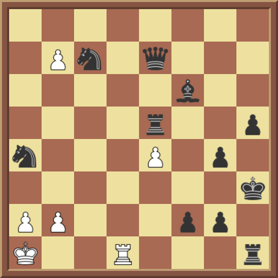

Chess Shop
The two most important things in a game of chess are the variant you are playing and the finishing blow.
[Saturday, December 18 at 05:30 PM UTC] Erratum in Chess Shop: The sixteenth grid under Win in 3 moves was modified.
[Monday, December 20 at 03:00 AM UTC] Erratum in Chess Shop: The thirteenth grid under Win in 3 moves was modified.
[Wednesday, December 22 at 4:50 PM UTC] Erratum in Chess Shop: The fifteenth grid under Win in 3 moves was modified.
On all boards below, it is white to play and win in the number of moves indicated. Castling and en passant, where applicable, are valid moves. Each of the following variants have exactly 8 boards belonging to them. Assume black makes the best move possible in all variants except Helpmate.
- Atomic chess
- Crazyhouse (There are 2 modifications to this variant. 1. Assume White only has a rook and a bishop to be dropped, and that Black cannot use any of his pieces, that is, Black has all other pieces on his side unused. 2. Unlike traditional Crazyhouse rules, it is not allowed to drop a piece that results in checkmate directly. This means that the last move cannot be a dropped piece, that is, the last move has to be made by a piece already on the board as of the last move.)
- Helpmate (For this variant, White still plays first, unlike normal helpmate puzzles where Black starts first.)
- Standard chess
- Three-check (Assume black has not been checked yet, that is, 3 to go.)
Win in 1 move
Win in 2 moves
Win in 3 moves
